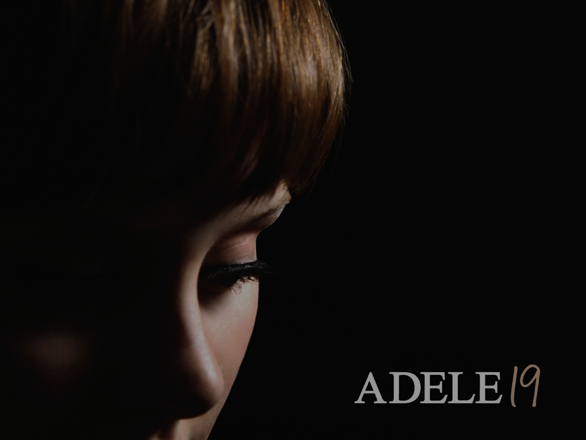
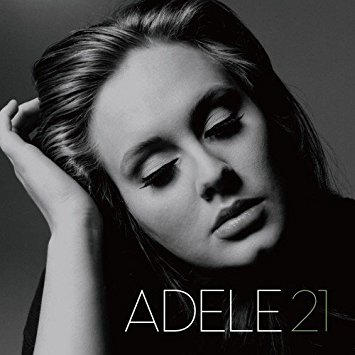

Adele 19
19 es el álbum debut de la cantautora británica Adele. Fue publicado el 28 de enero de 2008, la semana en que el sencillo principal, «Chasing Pavements», fuera lanzado en formato físico.
En su primera semana, el álbum debutó en el primer lugar de las listas en Reino Unido.1 El álbum incluye una versión de la canción de Bob Dylan «Make You Feel My Love».
Este álbum le hizo valer a Adele dos galardones en la
51.ª entrega de los Premios Grammy como mejor artista nuevo y mejor interpretación vocal pop femenina por «Chasing Pavements.
Se estima que el álbum ha vendido 10 millones de copias.


Adele 21
21 es el segundo álbum de estudio de la cantautora
británica Adele, lanzado el 24 de enero de 2011 en su
mayoría países europeos, mientras que en Norteamérica
fue el 22 de febrero del mismo año a través de los sellos
discográficos Columbia Records y XL Records.
La elección del título proviene de la edad que tenía
la intérprete cuando comenzó a escribir las canciones
que forman parte del disco.